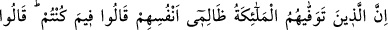
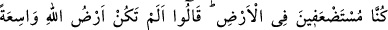
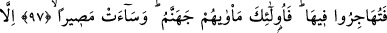
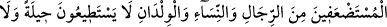
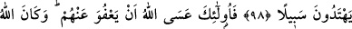
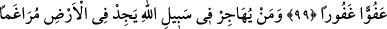
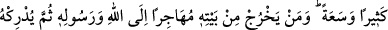
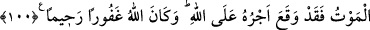
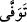
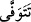

ALLAH YOLUNDA HİCRET
97- Kendilerine yazık eden kimselere melekler, canlarını alırken: «Ne işte
idiniz!» dediler. Bunlar: «Biz yeryüzünde çaresizdik» diye cevap verdiler. Melekler
de: «Allah’ın yeri geniş değil miydi? Hicret etseydiniz ya!» dediler. İşte onların
barınağı cehennemdir; orası ne kötü bir gidiş yeridir.
98- Yalnız hiç bir çareye gücü yetmeyen ve hicret için yol bulamayan gerçekten
zayıf erkekler, kadınlar ve çocuklar hariç.
99- İşte bunları, umulur ki Allah affeder; Allah çok affedicidir, bağışlayıcıdır.
100- Allah yolunda hicret eden kimse yeryüzünde gidecek bir çok güzel yer ve
bolluk (imkân) bulur. Kim Allah ve Rasûlü uğrunda hicret ederek evinden çıkar da
sonra kendisine ölüm yetişirse artık onun mükâfatı Allah’a düşer. Allah da çok
bağışlayıcı ve esirgeyicidir.
Hicreti terk ederek dînî esasların bozulmasına sebep olan kâfirlerle komşu olmayı
tercih etmek suretiyle nefislerine zulmederek “Kendilerine yazık eden kimselere
melekler canlarını alırken” âyetindeki “ fiili hem mâzî (geçmiş zaman) olabilir,
hem de aslı “” olup “te”lerden biri düşmüş muzârî (geniş zaman) olabilir. Mâzî
olursa meleklerin canlarını aldıkları kimseler, nesli tükenmiş ve geçip gitmiş muayyen
kimseler olur. Muzârî olursa, nefislerine zulmeden bütün insanlar hakkında olur. Âşikar
olan da muzârî lafzının burada mâzîye âit bir hâli hikâye etmesidir. Meleklerin onların
canlarını almasından kasıt, ölüm anında onların ruhlarını kabzetmeleridir. Bu işle
görevlendirilen melek “ölüm meleği” olup onun da yardımcı melekleri vardır. “Allah,
canları alır.” (Zümer, 39/42) ve “O sizi dirilten, sonra öldürecek olandır.” (Hac,